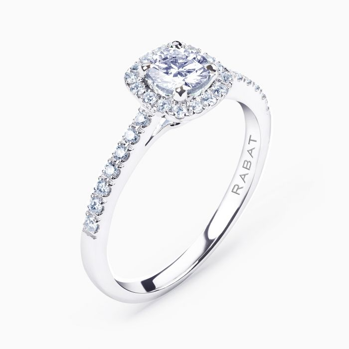

Anell de Diamant
Anell Rabat d'or blanc amb diamant central talla brillant (0,40 cts), orla de diamants i braç de diamants (0,21 cts.). Color dels diamants blancs: G-H. Puretat: VS
A la Joieria Vera, ens enorgulleix oferir joies d'alta qualitat amb dissenys únics, i aquest anell de diamant no és una excepció. ¡Ordeneu el vostre avui!
Preu: 3.330 €